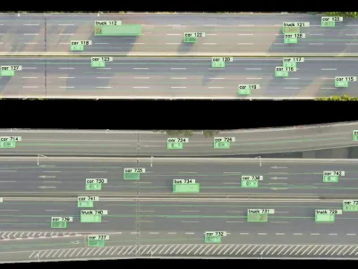

NGSIM
United States · 4 sites
Next Generation Simulation — synchronized 10 Hz vehicle trajectories from overhead cameras at four arterial and freeway sites. Widely used for car-following, lane-change, and microsimulation calibration.
Updated Apr 2026
